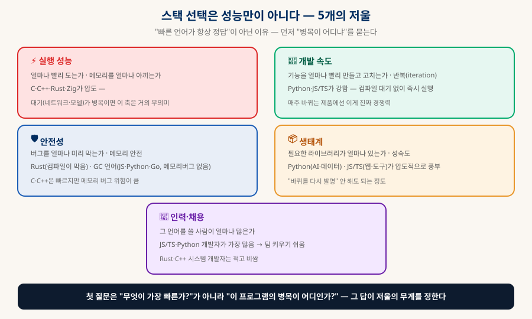
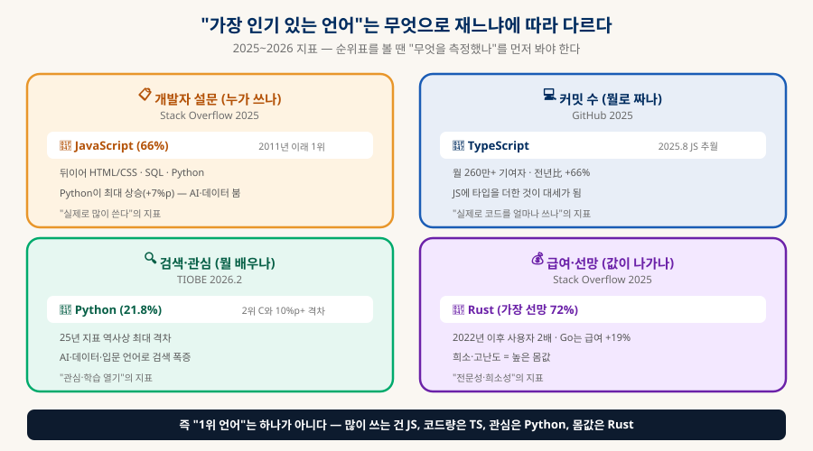
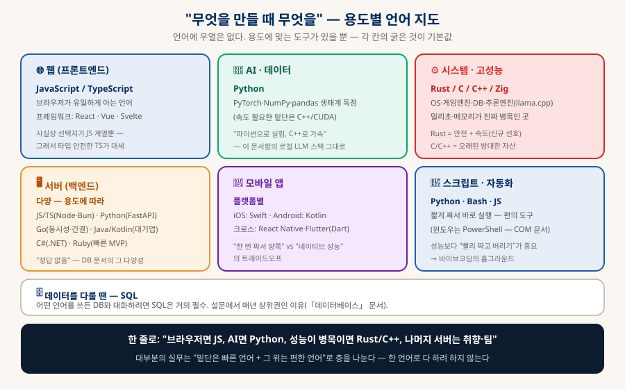
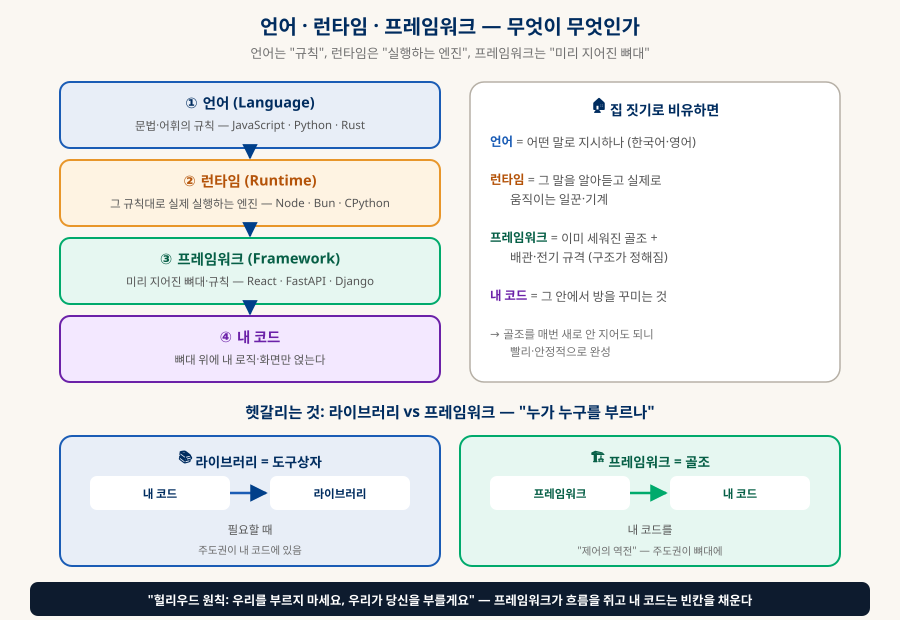
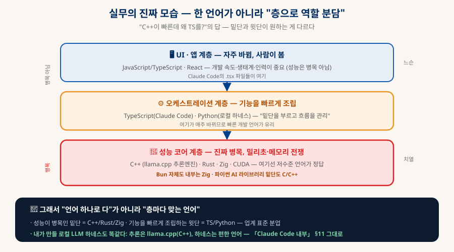

기술 스택 고르기
언어·프레임워크 지형도 — "빠른 언어가 항상 정답이 아니다"
"C++이 빠른데 왜 Claude Code는 TypeScript로 만들었을까?"라는 질문에서 출발한다. 스택 선택을 좌우하는 5개의 저울, 2025~2026 언어 인기 지형(측정법마다 다르다), 주요 언어별 강점과 쓰임새, 그리고 "무엇을 만들 때 무엇을 쓰는가"까지 — 초보자가 스택을 고르는 판단 기준을 한 문서로 정리한다.
0. 한눈에 보기 — 빠른 언어가 항상 정답은 아니다
「Claude Code 내부 해부」에서 나온 질문에서 출발한다
"C++이나 Rust가 더 빠른데, 왜 Claude Code는 TypeScript로 만들었을까?" — 이 질문의 답에 소프트웨어 스택 선택의 핵심이 다 들어있다. 결론부터: 대부분의 프로그램에서 병목은 "실행 속도"가 아니라 다른 데 있고, 병목이 아닌 걸 최적화하는 건 의미가 없기 때문이다. 에이전트 CLI의 병목은 모델 응답 대기(수 초~수십 초)라, 프로그램 자체가 100배 빨라져도 체감은 그대로다(「AI 하드웨어」의 "메모리 바운드"와 같은 원리). 그렇다면 남는 경쟁 축은 개발 속도·안전성·생태계·인력이고, 여기선 TypeScript/Python 계열이 앞선다. 이 문서는 그 판단 기준과 2026년 언어 지형을 정리한다.
성능·개발·안전·생태계·인력
측정법마다 다름 (§2)
아니라 "병목이 어디냐"
층마다 다른 언어 (§6)
1. 선택의 기준 — 5개의 저울
먼저 "이 프로그램의 병목이 어디인가"를 묻는다
스택 선택은 하나의 값(속도)을 최대화하는 문제가 아니라, 여러 축을 저울질하는 문제다. 그리고 그 저울의 무게는 "이 프로그램의 병목이 어디냐"가 정한다 — 병목이 아닌 축은 아무리 좋아도 소용없다.

| 저울 | 무엇을 묻나 | 강한 언어 — 그리고 언제 중요한가 |
|---|---|---|
| ⚡ 실행 성능 | 얼마나 빨리 도는가·메모리 | C·C++·Rust·Zig. 단, 연산이 진짜 병목일 때만 의미 — 대기(네트워크·모델·디스크)가 병목이면 거의 무관. |
| 🚀 개발 속도 | 얼마나 빨리 만들고 고치나 | Python·JS/TS. 컴파일 대기 없이 즉시 실행 → 매주 바뀌는 제품에서 진짜 경쟁력. |
| 🛡 안전성 | 버그를 미리 얼마나 막나 | Rust(컴파일이 메모리 버그를 막음), GC 언어(JS·Python·Go — 메모리 버그 자체가 없음). C·C++은 빠르지만 위험. |
| 📦 생태계 | 필요한 라이브러리가 있나 | Python(AI·데이터), JS/TS(웹·도구)가 압도적. "바퀴를 다시 발명" 안 해도 되는 정도. |
| 👥 인력 | 쓸 사람이 많은가 | JS/TS·Python 개발자가 가장 많음 → 팀 키우기·유지보수 쉬움. Rust·C++ 시스템 개발자는 적고 비쌈. |
2. 인기 지형 — "1위 언어"는 측정법마다 다르다
순위표를 볼 땐 "무엇을 측정했나"를 먼저 봐야 한다
"가장 인기 있는 언어"를 물으면 답이 하나가 아니다 — 무엇으로 재느냐에 따라 1위가 달라진다. 이걸 알면 상충하는 순위표들에 휘둘리지 않는다:

| 측정 방법 | 1위 | 의미 — 그리고 읽는 법 |
|---|---|---|
| 📋 개발자 설문 | JavaScript (66%) | "실제로 많이 쓴다". 2011년 이래 1위(Stack Overflow). HTML/CSS·SQL·Python이 뒤따르고, Python이 최대 상승(+7%p) — AI·데이터 붐. |
| 💻 커밋 수 | TypeScript | "코드를 얼마나 쓰나". 2025년 8월 GitHub에서 JS 추월, 월 260만+ 기여자(+66%). JS에 타입을 더한 것이 대세가 됨. |
| 🔍 검색·관심 | Python (21.8%) | "관심·학습 열기". TIOBE 지수 1위, 2위 C와 10%p+ 격차(지표 25년 역사상 최대). AI·데이터·입문 언어로 검색 폭증. |
| 💰 급여·선망 | Rust (선망 72%) | "전문성·희소성". 가장 선망받는 언어, 2022년 이후 사용자 2배. Go도 급여 프리미엄(+19%). 희소·고난도 = 높은 몸값. |
3. 주요 언어별 강점·쓰임새
각 언어가 "무엇 때문에 존재하고 어디서 빛나는가"
| 언어 | 한 줄 정체 | 강점·주 쓰임새 |
|---|---|---|
| JavaScript | 브라우저의 유일한 언어 | 웹 프론트엔드의 사실상 독점. 서버(Node)·도구까지 확장. 생태계·인력 최대. 「네트워크」 문서의 fetch가 이것. |
| TypeScript | 타입 붙은 JavaScript | JS의 유연함 + 정적 안전. 대규모 코드에서 리팩터링·실수 방지. Claude Code가 이걸로. 2025년 커밋 1위. |
| Python | 읽기 쉬운 만능 언어 | AI·데이터의 표준(PyTorch·pandas). 스크립트·자동화·백엔드(FastAPI)·교육. 밑단은 C/C++로 가속. 로컬 LLM 하네스에 최적. |
| Rust | 안전한 시스템 언어 | C++급 속도 + 컴파일이 메모리 버그를 원천 차단. 시스템·인프라·성능 코어. 가장 선망받지만 학습 난이도 높음. |
| Go | 단순한 서버 언어 | 동시성(고루틴)이 쉽고 문법이 간결. 클라우드 인프라(Docker·k8s가 Go). 컴파일 빠름. 배우기 쉬움. |
| C / C++ | 하드웨어에 가장 가까운 | OS·게임엔진·DB·추론엔진(llama.cpp). 밀리초·메모리가 병목인 곳. 방대한 자산, 대신 메모리 관리 위험. |
| Java / Kotlin | 기업 서버의 강자 | 대규모 백엔드·안드로이드. JVM 위에서 안정적. Kotlin은 Java의 현대판(안드로이드 공식). |
| C# | 마이크로소프트의 언어 | .NET 생태계·기업 앱·게임(Unity). 「Windows COM」 문서의 그 세계와 연결. |
| Swift | 애플의 언어 | iOS·macOS 네이티브 앱. 안전·현대적 문법. 애플 생태계 전용에 가까움. |
| SQL | 데이터를 다루는 언어 | DB와 대화하는 표준. 어떤 언어를 쓰든 거의 필수라 설문 상위권 고정(「데이터베이스」 문서). |
4. 무엇을 만들 때 무엇을 — 용도별 지도
"내가 만들려는 것"에서 거꾸로 언어를 고른다

| 만들려는 것 | 기본값 | 이유·대안 |
|---|---|---|
| 🌐 웹 프론트엔드 | JavaScript / TypeScript | 브라우저가 유일하게 아는 언어라 선택지가 사실상 JS 계열뿐. 대규모면 TS. |
| 🤖 AI · 데이터 | Python | PyTorch·pandas 생태계 독점. 속도 필요한 밑단만 C++/CUDA. "파이썬으로 실험, C++로 가속". |
| ⚙️ 시스템·고성능 | Rust / C / C++ / Zig | OS·게임엔진·DB·추론엔진 — 밀리초·메모리가 진짜 병목인 곳. 신규는 Rust 선호. |
| 🖥 서버(백엔드) | 다양 (정답 없음) | JS/TS(Node·Bun)·Python(FastAPI)·Go(동시성)·Java/Kotlin(대기업)·C#(.NET). 팀·취향·규모로 결정. |
| 📱 모바일 앱 | 플랫폼별 | iOS=Swift, Android=Kotlin. 크로스플랫폼은 React Native·Flutter(Dart) — "한 번 짜서 양쪽" vs "네이티브 성능" 트레이드오프. |
| 🔧 스크립트·자동화 | Python · Bash · JS | 짧게 짜서 바로 실행. 윈도우는 PowerShell(「COM」 문서). 성능보다 "빨리 짜고 버리기" — 바이브코딩의 홈그라운드. |
5. 프레임워크·런타임 층 — 언어 위의 선택
언어를 골랐으면 그 위의 도구도 고른다
언어만으로는 부족하다. 그 위에 런타임과 프레임워크를 고른다. 둘이 뭔지부터 확실히 잡고 넘어가자 — 초보자가 가장 자주 헷갈리는 지점이다.
A런타임과 프레임워크가 무엇인가

런타임(Runtime)은 코드를 실제로 실행하는 엔진이다. 언어는 "문법·규칙"일 뿐이고, 그 규칙대로 쓰인 코드를 읽어 진짜로 동작시키는 프로그램이 런타임이다. 예를 들어 JavaScript라는 언어는 브라우저가 실행하기도 하고, 서버에서는 Node·Bun·Deno라는 런타임이 실행한다 — 같은 언어라도 어느 런타임에서 도느냐에 따라 속도·기능이 달라진다(「Claude Code 내부」가 Bun을 쓴 이유가 이것). Python은 CPython이라는 인터프리터가, Java·C#는 가상머신(JVM·CLR)이 실행한다. 반면 C++·Rust는 미리 기계어로 컴파일해 별도 런타임 없이 바로 도는 쪽이다(§6의 성능 코어가 여기).
프레임워크(Framework)는 미리 지어진 뼈대·구조다. 웹 서버든 앱이든 매번 똑같이 필요한 것들 (요청 처리·라우팅·화면 갱신·데이터 연결…)을 프레임워크가 골조로 제공하고, 나는 그 빈칸에 내 로직만 채운다. 집으로 치면 골조와 배관 규격이 이미 서 있고 나는 방 인테리어만 하는 셈이라, 매번 바닥부터 짓지 않아 빠르고 안정적이다.
| 개념 | 한 줄 정의 | 예 · 비유 |
|---|---|---|
| 언어 | 문법·어휘의 규칙 | JavaScript · Python · Rust — "어떤 말로 지시하나" |
| 런타임 | 그 코드를 실제 실행하는 엔진 | Node · Bun · CPython · JVM — "말을 알아듣고 움직이는 일꾼" |
| 프레임워크 | 미리 지어진 뼈대·구조 | React · FastAPI · Django — "이미 세워진 골조" |
| 라이브러리 | 필요할 때 꺼내 쓰는 도구 | 날짜 계산·차트 그리기 등 — "도구상자" |
B주요 선택지 (2026)
이제 층별 대표 선택지를 보자 — 새 프로젝트는 보통 언어 → 런타임 → 프레임워크 순으로 좁혀간다:
| 층 | 대표 | 성격 (조사 시점) |
|---|---|---|
| 웹 프론트 | React · Vue · Svelte | React가 여전히 선두(전문 개발자 ~40%). Next.js가 React 기반 풀스택 표준. Claude Code의 터미널 UI도 React(Ink). |
| JS 런타임 | Node · Bun · Deno | Node가 안전한 기본값(npm 호환·LTS). Bun·Deno는 속도·개발경험으로 도전 — Claude Code는 Bun(TS 바로 실행·빠른 시작). |
| Python 백엔드 | FastAPI · Django · Flask | FastAPI 급성장(비동기·AI API·스트리밍에 강함, ~38%). Django는 여전히 최대(풀스택·성숙). 로컬 LLM API 서버에 FastAPI가 흔함. |
| AI/ML | PyTorch · TensorFlow | PyTorch가 연구 주도. TensorFlow는 모바일·엣지 배포(TFLite)에서 우위. 로컬 추론은 llama.cpp·Ollama(「로컬 LLM」 문서). |
| 엣지·경량 서버 | Hono · Fastify | Express의 자리를 잠식 — Cloudflare Workers·Vercel Edge 등 엣지 런타임에서 가벼움·속도. |
6. 층으로 역할 분담 — "한 언어로 다"가 아니다
"C++이 빠른데 왜 TS를?"의 최종 답
실무의 진짜 모습은 "최고의 언어 하나로 전부"가 아니라 층마다 병목이 다르니 언어도 다르게다. 같은 제품 안에서도 밑단과 윗단이 원하는 게 다르다:

| 층 | 언어 | 왜 그 언어 |
|---|---|---|
| 🖥 UI·앱 | JS/TS · React | 자주 바뀌고 사람이 봄 — 개발 속도·생태계가 중요, 성능은 병목 아님. |
| ⚙️ 오케스트레이션 | TS(Claude Code) · Python(로컬 하네스) | 밑단을 부르고 흐름을 관리 — 매주 바뀌므로 빠른 개발 언어가 유리. |
| 🔩 성능 코어 | C++(llama.cpp) · Rust · Zig · CUDA | 진짜 병목 — 밀리초·메모리 전쟁. Bun 내부도 Zig, 파이썬 AI 라이브러리 밑단도 C/C++. |
7. 스택 고르기 체크리스트
새 프로젝트에서 언어·스택을 정할 때 물어볼 것
1️⃣ 병목이 어디인가
연산이 병목? → 저수준 언어 고려. 대기(네트워크·모델·IO)가 병목? → 성능 저울 무시하고 개발 속도 우선. 이 질문이 첫 번째.
2️⃣ 플랫폼이 강제하나
브라우저면 JS, iOS면 Swift, 안드로이드면 Kotlin — 선택지가 이미 정해진 경우가 많다. 강제가 있으면 거기서 시작.
3️⃣ 생태계가 있나
AI면 Python(PyTorch), 웹이면 JS(React) — 라이브러리가 몰려 있는 언어를 거스르면 고생한다. "그 분야의 기본값"을 먼저 본다.
4️⃣ 팀·나는 뭘 아나
혼자·소규모면 아는 언어가 가장 빠르다. 팀이면 인력 구하기 쉬운 언어. 배움이 목적이면 반대로 새 언어도 좋다.
5️⃣ 얼마나 오래 갈 코드인가
버리는 스크립트면 Python·Bash로 빨리. 오래 유지할 대형이면 타입 안전(TS·Rust)이 나중을 구한다.
6️⃣ 한 언어일 필요 없다
밑단(성능)과 윗단(기능)을 나눠도 된다(§6). "전부 한 언어로"라는 강박을 버리면 선택이 쉬워진다.
8. 출처
2025~2026 지표 — 빠르게 변하므로 최신 확인 권장
- Stack Overflow Developer Survey 2025 §2. 개발자 사용률(JS 66% 1위)·선망(Rust 72%)·프레임워크(React ~40%)의 1차 출처.
- TIOBE Index §2. 검색 기반 인기 지수 — Python 1위(2026.2, 21.8%).
- GitHub Octoverse (커밋·기여자 통계) §2. TypeScript가 2025년 커밋 1위로 JS 추월.
- JetBrains Developer Ecosystem Survey §5. Python 프레임워크(Django·FastAPI) 채택률 등.